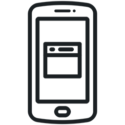
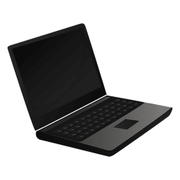
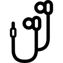
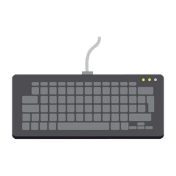

Mobile phones
A mobile phone is a portable telephone that can make and receive calls over a radio frequency link while the user is moving within a telephone service area. The radio frequency link establishes a connection to the switching systems of a mobile phone operator, which provides access to the public switched telephone network. In addition to telephony, 2000s-era mobile phones support a variety of other services, such as text messaging, MMS, email, Internet access, short-range wireless communications (infrared, Bluetooth), business applications, video games, and digital photography. Mobile phones offering only those capabilities are known as feature phones; mobile phones which offer greatly advanced computing capabilities are referred to as smartphones.
There is a variety of mobile phones:
-
cell phones

-
smartphone

Computers
A computer is a device that can be instructed to carry out sequences of arithmetic or logical operations automatically via computer programming. Modern computers have the ability to follow generalized sets of operations, called programs. These programs enable computers to perform an extremely wide range of tasks.
Computers are used as control systems for a wide variety of industrial and consumer devices. This includes simple special purpose devices like microwave ovens and remote controls, factory devices such as industrial robots and computer-aided design, and also general purpose devices like personal computers and mobile devices such as smartphones.
There is a variety of computers:
-
desktop computers

-
laptops

-
Personal Digital Assistants (PDAs)
If it goes on your device or plugs into it, we have you covered with reviews of everything from cases to cables to docks to keyboards, and whatever other accessories you may need for your smartphone, computer, tablet, and more. Our team’s picks will help you personalize, protect, and be productive—this is the stuff you use every day, and we’ve found the best of it.
There are thousands of accessories for IT like:
-
earphones

-
mouses
-
keyboards

And many others...